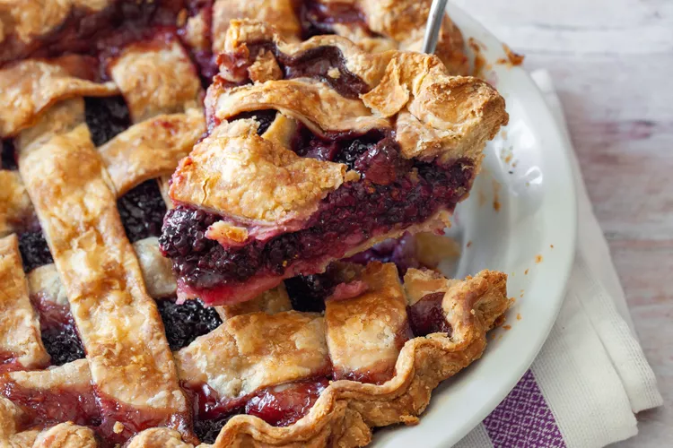

Blackberry Pie

Description
Celebrate summer with this fresh and fruity blackberry pie recipe.
Ingredients
- 4 cups fresh blackberries
- ¾ cup white sugar or more to taste, divided
- ½ cup all-purpose flour
- 1 (9 inch) double crust ready-to-use pie crust
- 2 tablespoons milk
Steps
- Gather all ingredients. Preheat the oven to 425 degrees F (220 degrees C).
- Combine 3 1/2 cups of blackberries with 1/2 cup sugar and flour in a large bowl. Spoon
mixture into the
unbaked
pie crust. Spread remaining 1/2 cup berries on top of sweetened berries.
- Cover with the top crust. Seal and crimp the edges, and cut vents in the top crust for steam
to escape.
- Brush the top crust with milk and sprinkle with remaining 1/4 cup sugar.
- Bake pie in the preheated oven for 15 minutes. Reduce the temperature of the oven to 375
degrees F (190
degrees
C) and bake until filling is bubbly and crust is golden brown, an additional 20 to 25 minutes. Cool on wire
rack.
- Serve and enjoy!